Toute l'équipe est à votre écoute pour répondre au mieux aux besoins de vos chats, chiens et rongeurs de tous poils.


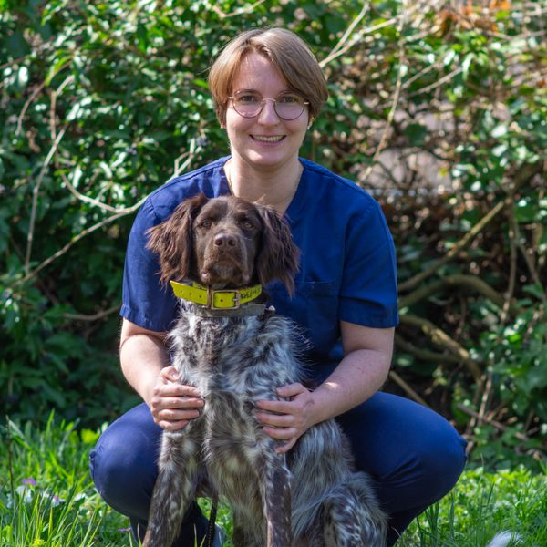
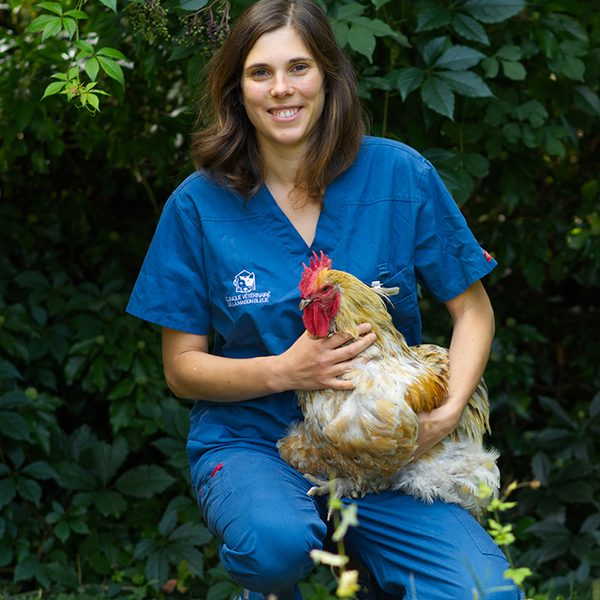
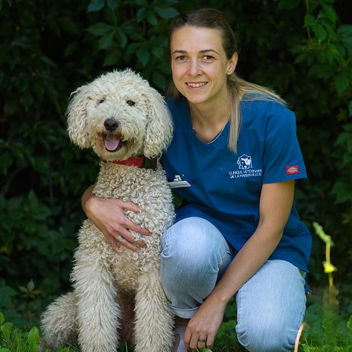
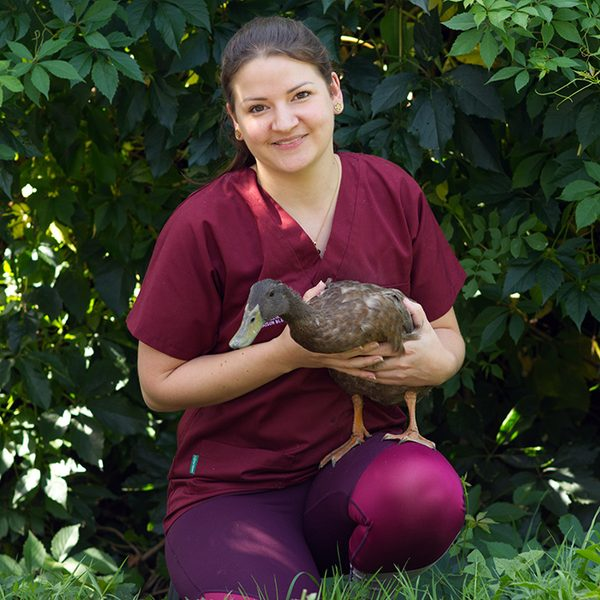
+512 passionnés à votre service · Urgences 24h/24

Survolez ou touchez une carte pour voir la salle correspondante.
Consultations, vaccinations, prévention et suivi de vos compagnons tout au long de leur vie.
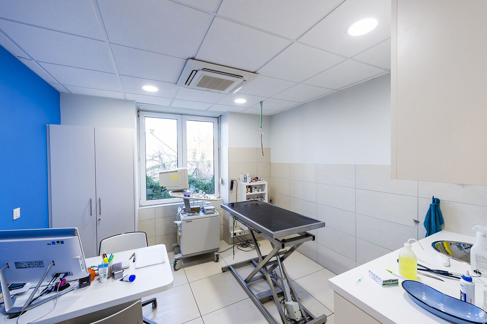
Une salle d'opération équipée pour réaliser les interventions dans les meilleures conditions.

Une salle de radiologie sur place pour poser un diagnostic rapidement.
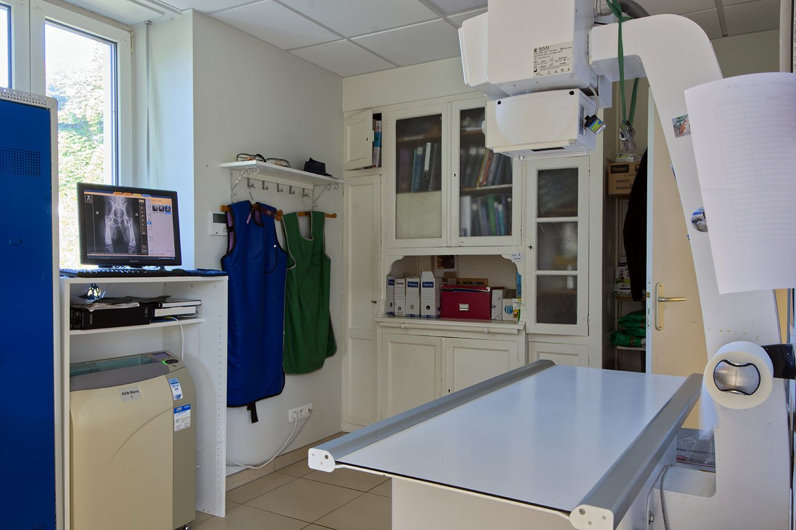
Un examen d'imagerie non invasif et indolore pour affiner le diagnostic.

Un chenil pour surveiller et soigner vos animaux, même lorsqu'ils doivent rester parmi nous.
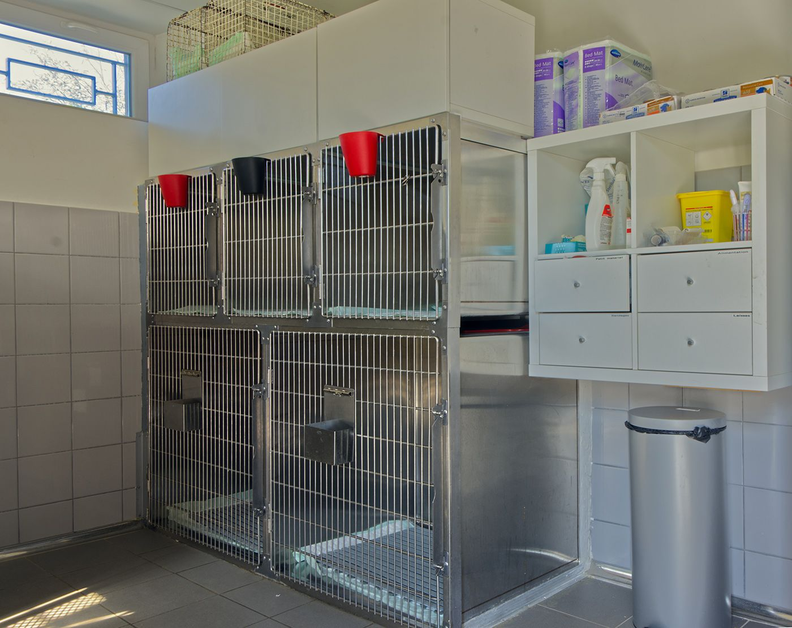
Des analyses réalisées à la clinique pour des résultats sans attendre.

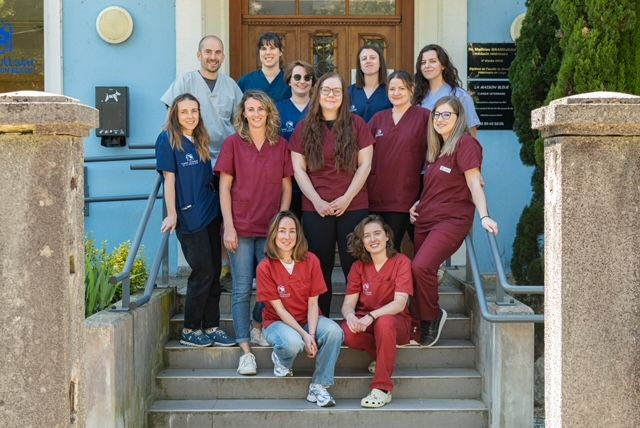
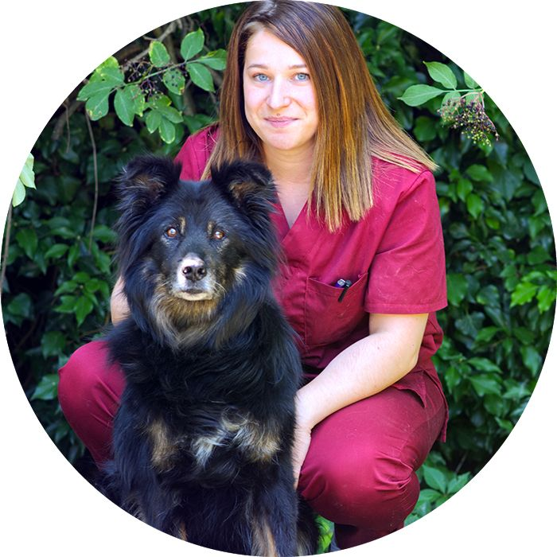
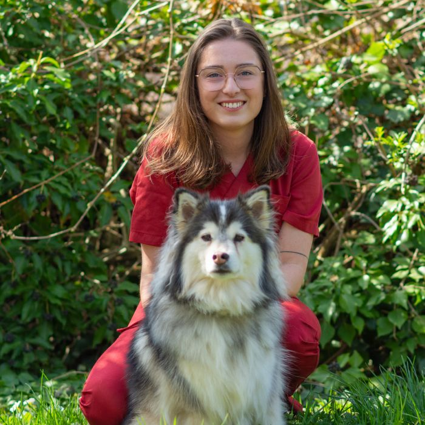
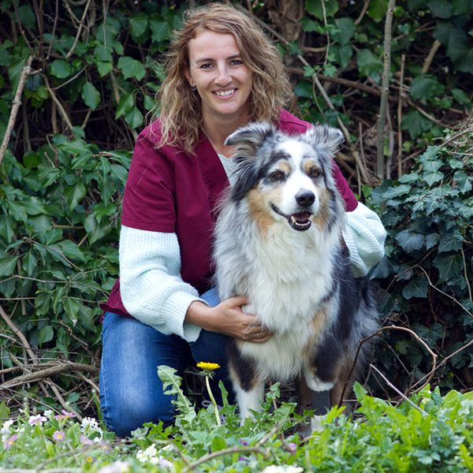


Un service de permanence les nuits et week-ends permet de faire face à toutes les situations d'urgence.
Mariella De Nies s'installe rue des Bons-Enfants à Altkirch.
Le cabinet devient clinique et emménage Faubourg de Mulhouse.
Mathieu Grandjean devient l'associé de Mariella De Nies.
Accueil agrandi, climatisation et rampe d'accès PMR.
Mathieu Grandjean succède à Mariella De Nies.
Consultations uniquement sur rendez-vous
Oui, les consultations se font uniquement sur rendez-vous, du lundi au vendredi de 9h à 12h et de 14h à 19h, et le samedi de 9h à 12h.
Les urgences sont assurées 24h/24. Appelez la clinique au 03 89 40 66 06 : un service de permanence fonctionne les nuits et week-ends.
Chats, chiens et rongeurs de tous poils : toute l'équipe est à votre écoute pour répondre au mieux à leurs besoins.
Oui, la clinique dispose d'une rampe d'accès PMR et de locaux climatisés depuis sa rénovation.
Nuits, week-ends, jours fériés : appelez-nous, on vous guide.